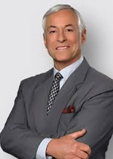
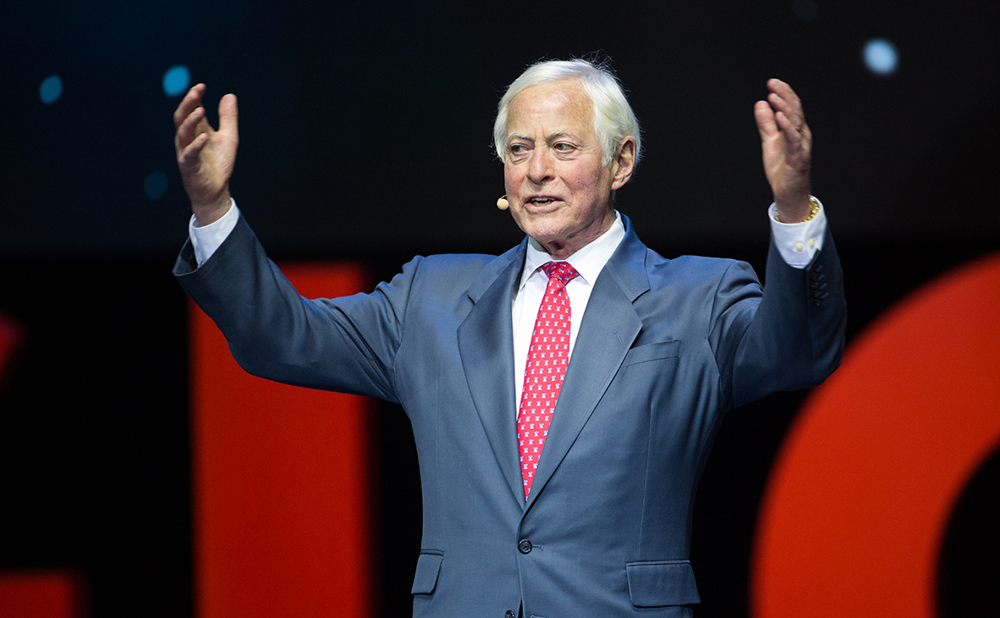

Браян Трейсі

Народився Браян 5 січня 1944 р. в Канаді у небагатій родині.
Ще з юнацтва його постійно цікавило питання: чому при рівних
можливостях одні люди успішні, а інші — ні.
В 1984 році заснував компанію,яка дає консультації з питань:
- лідерства
- продажу
- почуття власної гідності
- мети
- стратегії
- творчості
- психології успіху
В ході кар'єри Браян Трейсі провів понад 4500 семінарів
по всьому світу для більш, ніж 500 компаній.
У 2010 році заснував Університет Браяна Трейси, який в
Інтернеті формує навчання навчальних підприємств і
менеджерів за продажем.

До переліку американських бестселерів відносять книги:
«Досягення максимуму» та «Вийди із зони комфорту».
Саме вони зробили письменника таким популярним у всьому світі.
У цих творах автор дає цінні поради щодо того, як правильно
організувати свій робочий час,навчитися ставити чіткі завдання,
планувати і досягати успіху в будь-якій справі.
Декілька фактів про Браяна Трейсі:
- оратор-мотиватор, письменник
- 76 років
- Проживає в Сан Дієго (США)
- Директором компанії Brian Tracy International
- Провів 4500 семінарів